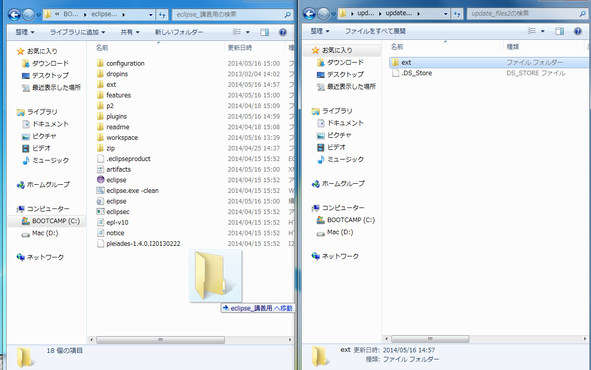

このページではRonproPlugin2.2.3の変更点と，アップデート方法を説明します．
講義サイトからupdate_files5.zipをダウンロードしてください．ダウンロードが終了したらzipファイルを開き，中にあるextフォルダをeclipseのあるフォルダ内にコピーしてください． このとき，ファイルをすべて上書きしてください．

Eclipseを起動します．メニューバーのヘルプをクリックし，更新の確認をクリックします． 前回同様にここからプラグインを更新して，eclipseを再起動してください．
eclipseのメニューバーのヘルプをクリックし，更新の確認をクリックします． 前回同様にここからプラグインを更新して，eclipseを再起動してください．
eclipseのメニューバーのヘルプをクリックし，EclipseSDKについてをクリックします．「Eclipse SDKについて」というウィンドウが出たら，インストール詳細をクリックしてください．
インストール済みのソフトウェアの中に，RonproEditorPlugin2.2.3があることを確認して下さい．確認ができたら確認ができたらTAを呼んでチェックを受けてください．お疲れ様でした．